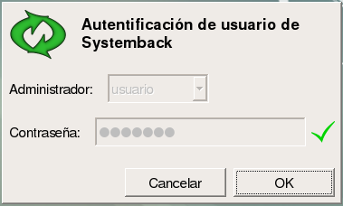
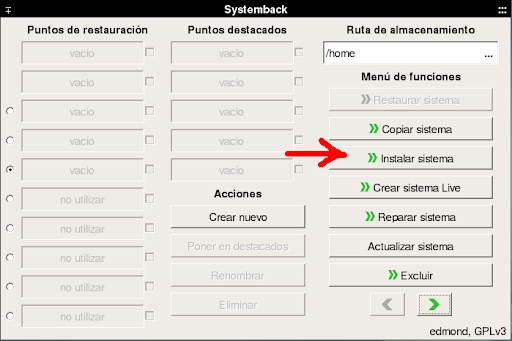
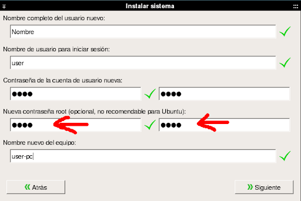
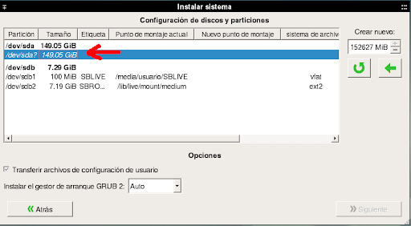
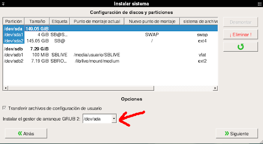
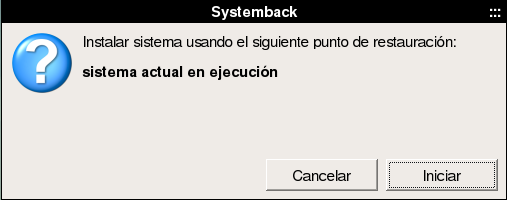
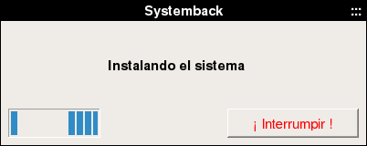
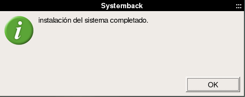

Instalacion BIOS
Configuración del setup
Antes de proceder con la instalación será necesario realizar algunas configuraciones en el setup. ingrese al setup y realice las siguientes operaciones:
- boot > boot mode: LEGACY
- boot > usb boot: Habilitado
- fast boot: Deshabilitado
- seguridad > secure boot: Deshabilitado ó seguridad > secure boot configuration > secure boot opción: desactivado
Debian-fai como sistema único
-
Hacer doble click sobre “Instalar Sistema” e ingresar como contraseña: usuario
 -
Seleccionar la opción “Instalar Sistema”.
 -
Completar datos del usuario. Importante: establecer una contraseña de root.
 -
Identificar el disco donde se instalará el sistema, por ejemplo, en este caso “/dev/sda”:
 -
Crear las particiones necesarias para el sistema, como mínimo 2:
- una partición para el área de intercambio “swap” a la cuál se recomienda darle el doble del tamaño de la ram.
- una partición para el sistema raíz “/” que tendrá una dimensión mínima de 40 GB.
Nota: se recomienda crear una partición extra para los datos del usuario “/home” que aloje los datos de usuario.

-
Seleccionar el disco donde se instalará el gestor de arranque, en este caso “/dev/sda” y pulsar “siguiente”.
 -
Iniciar la instalación.
  -
Cuando la instalación finaliza se muestra el siguiente mensaje:
 - Una vez hecho esto reiniciar el equipo y extraer el pendrive.
Debian-fai junto con otro sistema operativo
- Abrir la aplicación Gparted, ingresar como contraseña: “usuario”. Sistema -> Administración -> GParted
- Procedemos a redimensionar la partición donde tenemos instalado el sistema operativo que deseamos mantener para reducir el volumen y obtener así una nueva partición donde se podrá instalar el sistema(mínimo 50 gb).
-
Hacer doble click sobre “Instalar Sistema” e ingresar como contraseña: “usuario”.
-
Seleccionar la opción “Instalar Sistema”.
-
Completar datos del usuario.
Importante: establecer una contraseña de root.
-
Identificar el disco donde se instalará el sistema, por ejemplo, en este caso “/dev/sda”:
En la particion que hemos creado al principio, crear las particiones necesarias para el sistema, como mínimo 2:
- una partición para el área de intercambio “swap” a la cuál se recomienda darle el doble del tamaño de la ram.
- una partición para el sistema raíz “/” que tendrá una dimensión mínima de 40 GB.
Nota: se recomienda crear una partición extra para los datos del usuario “/home” que aloje los datos de usuario, lo cuál implica reducir la partición del SO que se desea conservar en más de 50 gb.
-
Iniciar la instalación.
-
Cuando la instalación finaliza se muestra el siguiente mensaje:
- A partir de aquí el sistema estará instalado, solo resta configurar el grub para un correcto arranque, los pasos para lograrlo se describen en la sección instalación de grub bios más adelante.
- Una vez hecho esto reiniciar el equipo y extraer el pendrive.